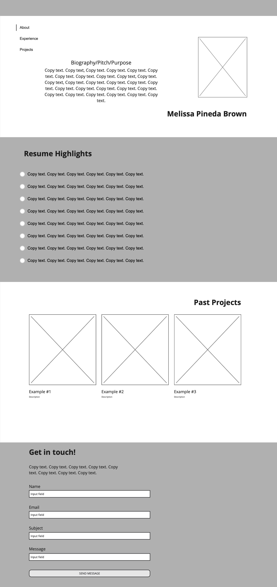
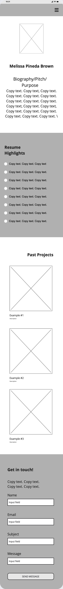

At the top of my website I plan to have a short summary about myself professionally. This will be accompanied by a picture that is captioned with my name. My name will be clickable and if a user clicks on it, it will automatically redirect them to the bottom of the page where the contact form is.
In this section I will highlight past important and relevant (relevant to my pivot into being a creative freelancer) work experience. This will be formatted with bullet points and act as a quick highlight reel of my resume to website viewers.
In this section there will be three projects I've created in the recent past, side by side (or stacked on top of each other on a mobile phone). My hope is that as viewers place their cursor over one of the projects, the project hovers slightly. And if they click on it the image extends to a larger overlay. The user can and minimize or close the image by selecting it again.
There will be a contact form that a user can fill in, which will then prompt an email to be sent to me regarding their inquiry. At the end of the form will be a button that viewers must push to send this information to me. Once they have pushed the button the contact form disappears and in its place appears a checkmark to communicate to them that their information was successfully accepted and sent.

